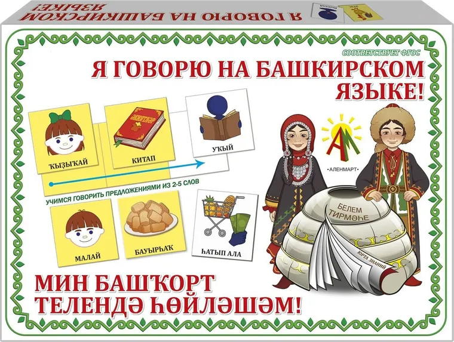
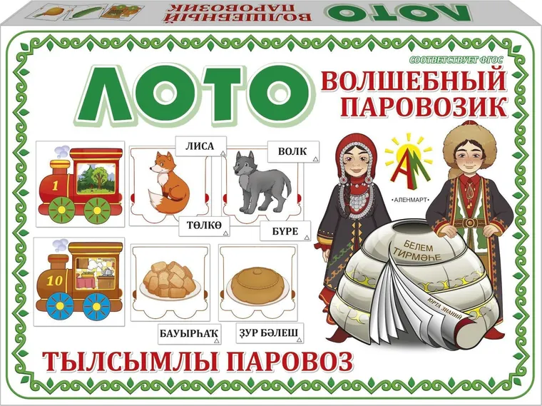
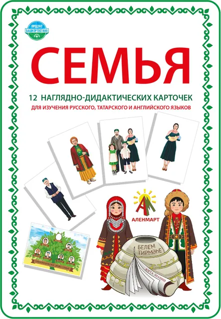
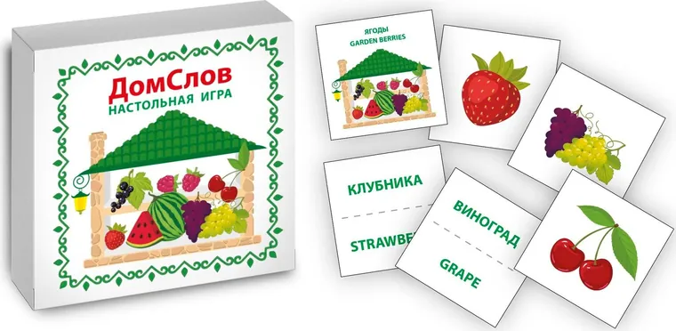
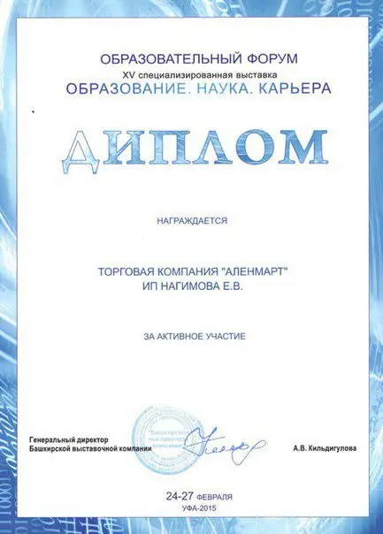
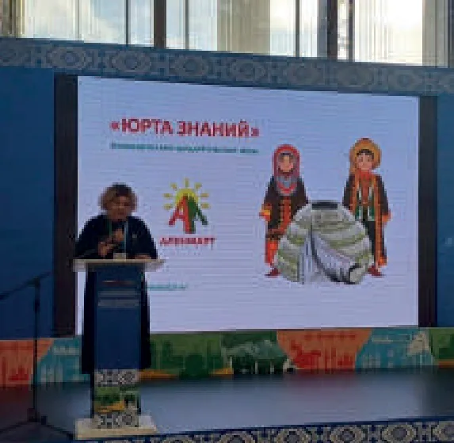

«Qani, o‘ynaymiz! Boshqirdiston» viktorinasi
Olti mavzu: shahar va tuman ramzlari, yodgorliklar, tabiat, xalqlar va urf-odatlar, bayramlar, adabiyot va san’at.
2 500 ₽Sotib olish
«Bilim o‘tovi» stol o‘yinlarida bolalar boshqird tili va o‘z yurti madaniyatini o‘rganadi. Bu usul har qanday xalq va tilga mos keladi. Boshqa hududlar uchun o‘yinlar yaratishga hamkorlar izlaymiz.
OILA
oʻzbek tilitayyorlanmoqda
«Oila» kartochkalari 12 ta kartochka, orqasida uch tilda she’r va topishmoqlar
Sizning tilingiz?
Xalqingiz va hududingiz uchun ham til, tarix, naqshlar va bayramlar haqida o‘yinlar yarata olamiz.
Yelena bilan gaplashishBola uchun o‘yin bir sarguzasht. O‘ynab u xotira, diqqat, fikrlash, kuzatuvchanlik va tasavvurini rivojlantiradi, o‘z xalqi va qo‘shnilarining tili, tarixi va an’analarini o‘rganadi.
So‘zni o‘rgatadi rasm, tarixni so‘zlaydi naqsh, bilim beradi o‘yin.
O‘yinlar bolalarni boshqa xalqlarning urf-odatlarini hurmat qilishga, do‘stlikka, tenglikka va o‘zaro yordamga o‘rgatadi. Bola boshqalarga qiziqish va hurmat bilan qarashni o‘rganadi.
Bog‘chalar, maktablar va oilalar uchun. Narxlar manbasi alenmart.ru (2026-yil oktabr).
Olti mavzu: shahar va tuman ramzlari, yodgorliklar, tabiat, xalqlar va urf-odatlar, bayramlar, adabiyot va san’at.

Oila a’zolari rus, boshqird va ingliz tillarida. Orqasida she’r va topishmoqlar, to‘plamda shajara kartochkasi bor.

O‘yinning 18 varianti: ilk so‘zlardan tayanch chizmalar orqali ikki-besh so‘zli gaplargacha.

«Kim birinchi?», «Buyumni ayt» va «Ortiqchasini top» o‘yinlarida so‘z o‘rganamiz. 56 ta rasmli va 134 ta yozuvli kartochka.

55 ta kartochkaning istalgan ikkitasida umumiy rasm yoki so‘z bor. Uni toping, ayting va kartochkani birinchi bo‘lib qo‘ying.

Respublika xaritasi, madhiyasi, gerbi, bayrog‘i va milliy kiyimlari haqida viktorina.

Respublika tuman va shaharlari, diqqatga sazovor joylari, mashhur insonlari va tarixiy maskanlari.

Mozaika respublika tarixi va madaniyatini tanitadi, diqqat, xotira va mayda motorikani rivojlantiradi.

Uchburchak mozaika poytaxt tarixi va madaniyatini hikoya qiladi.

Loto, mozaika, namunadan naqsh terish va ketma-ketlikni davom ettirish orqali boshqird naqshlarini o‘rganamiz.

Boshqird, rus, tatar, chuvash, mari, udmurt, mordva va boshqa qo‘shni xalqlarning kiyimlari, urf-odatlari va kundalik hayoti.

O‘sha 12 ta kartochka rus, tatar va ingliz tillarida.

Buyumlar, hayvonlar va tatarcha so‘zlar tasvirlangan 55 ta kartochkadan juftini kim tezroq topadi?

Buyumlarni guruhlab, umumiy nomlarini o‘rganamiz. Ruscha va inglizcha asosiy lug‘at.

Namuna asosida respublika ramzlari va milliy kiyimlarni bo‘yaymiz, naqsh va ranglarni eslab qolamiz.

Bo‘yash mashqlari nutq, mayda motorika va ko‘rish idrokini rivojlantiradi.

22 sahifada Tataristonning besh xalqi, respublika ramzlari, milliy taomlar va musiqa asboblari.

Boshqirdcha kiyingan besh qo‘g‘irchoq bolalarni xalq o‘yinchog‘i va uning naqshlari bilan tanishtiradi.
O‘lkashunoslik darslari uchun to‘plamlar tayyorlaymiz: «Bog‘cha» · 7 000 ₽, «Maktab» · 8 700 ₽. «AlenMart» MChJ orqali 44-FZ va 223-FZ qonunlari asosida yetkazib beramiz.
To‘plam so‘rashO‘yinlar onlayn savdo maydonlarida ham sotiladi.
«Boshqirdiston Respublikasining davlat tillarini o‘rganish uchun ta’lim muassasalariga mo‘ljallangan “Bilim o‘tovi” didaktik stol o‘yini ma’qullansin».
Asl nusxani ko‘rish uchun hujjatni bosing.

Boshqirdiston Respublikasi Ta’lim va fan vazirligi
«Ona yurt tarixi she’rlarda» respublika ifodali o‘qish tanlovi ishtirokchilariga berilgan sovrinlar uchun
2024

Boshqird tilini saqlash va rivojlantirish bo‘yicha avtonom notijorat tashkiloti
Boshqird tilini saqlash, rivojlantirish va ommalashtirishga qo‘shgan hissasi uchun

Sibay tibbiyot kolleji
Ona tili, xalq tarixi, madaniyati va turmushini o‘rganishga qo‘shgan hissasi uchun
2026

2-sonli maktab, Surxondaryo viloyati, O‘zbekiston
O‘zbekiston va Boshqirdiston o‘rtasida ta’lim va madaniyat sohasidagi hamkorlikni mustahkamlagani uchun

Boshqirdiston Ta’lim va fan vazirligi huzuridagi o‘quv-uslubiy kengash
6-son bayonnoma: «Bilim o‘tovi» ta’lim muassasalari uchun ma’qullangan
2023

«Reklama o‘rniga xayriya» federal loyihasi
«Bolaning rivojlanish tarixi» loyihasida Ufa bolalar poliklinikalariga yordam bergani uchun
2015

«Ta’lim. Fan. Karyera» ko‘rgazmasi
Ta’lim forumida faol qatnashgani uchun diplom
2015

Ishtirokchi haqida o‘qish uchun ismini bosing.
«Bilim o‘tovi» Boshqirdiston Tashqi iqtisodiy aloqalar vazirligining biznes missiyalari tarkibida Qozog‘iston, Belarus va O‘zbekistondagi xalqaro forumlarda qatnashadi.
 O‘zbekcha kartochkalar: Oila
O‘zbekcha kartochkalar: Oila Boshqirdiston va Qozog‘iston forumi
Boshqirdiston va Qozog‘iston forumi
Loyiha taqdimoti Birga o‘ynaymiz
Birga o‘ynaymizUmumiy qadriyatimiz bitta: o‘zaro hurmat.
Rossiyaning har bir hududi va xalqi haqida o‘yinlar turkumini yaratmoqchimiz. Ta’lim muassasalari, hududlar, madaniy va ijtimoiy loyihalar, kompaniya va tashkilotlarni hamkorlikka taklif etamiz.
Sizning tilingiz?
Yelena Vladimirovnaga yozing. Hududingiz uchun «Bilim o‘tovi» qanday bo‘lishini birga muhokama qilamiz.
Yelenaga MAX orqali yozish